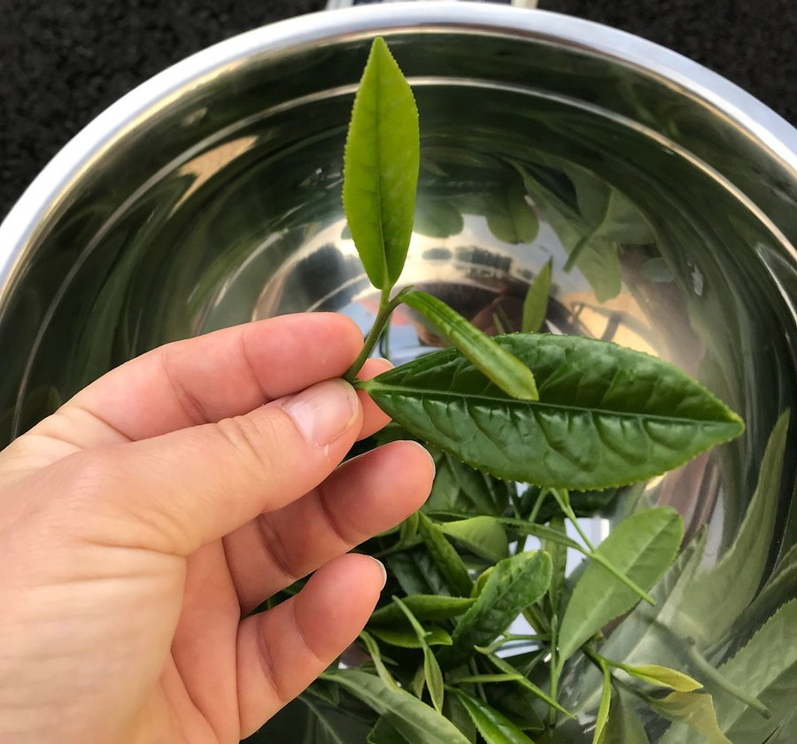

Sugar Reset Ingredients: All 22, Sorted by What They Do
One milliliter, one chromium line and a 200 mg blend that reads like four different supplements. Here's the label grouped by purpose, with the math the blend allows.

Key takeaways
- Twenty-two ingredients share 200 mg. The proprietary blend lists them all but gives no individual amounts, so about 9 mg each is the average.
- Chromium is the only dosed active, at 0.7 mcg. That's 2% of the daily value and a tiny fraction of the 200 to 1,000 mcg used in studies.
- Only a few ingredients target blood sugar. Gymnema, green tea and panax ginseng carry that case. The rest are energy herbs, weight-loss ingredients and amino acids.
- Label order sets a ceiling. Blend ingredients must be listed by weight, so gymnema, eighth on the list, can't exceed about 25 mg per milliliter.
- Some entries matter for safety. Guarana adds caffeine, gymnema and chromium can add to diabetes drugs, and the base contains xylitol, which is toxic to dogs.
Sugar Reset ingredients come down to two lines: chromium picolinate at 0.7 mcg and a 200 mg proprietary blend of 22 botanicals and amino acids per 1 ml. They include gymnema, green tea, panax ginseng, guarana, raspberry ketones, coleus and eight amino acids. Individual amounts aren't disclosed, and the average works out to about 9 mg each.
Below, we sort all 22 into groups by what they're actually used for, show what the label order tells you about the amounts, and flag the entries that matter for safety. Whether the formula works is covered in does Sugar Reset work; price and verdict are in our Sugar Reset review.

Sugar Reset: check today's price
A liquid chromium and botanical blend for metabolic balance. One or two droppers a day. Sold only on the official site, with a 60-day money-back guarantee.
See the official price →What are the ingredients in Sugar Reset?
Sugar Reset is a liquid supplement in a 2 fl oz (60 ml) dropper bottle. One serving is 1 ml, and the directions say one or two droppers a day. Here's every active ingredient on the Supplement Facts panel, in the order printed at the time of writing, sorted into the groups we use on this page.
| # | Ingredient (as labeled) | Group |
|---|---|---|
| Chromium (as chromium picolinate), 0.7 mcg | Blood sugar mineral | |
| 1 | Maca root extract | Energy and adaptogen |
| 2 | Grape seed extract | Antioxidant |
| 3 | Guarana seed extract | Stimulant |
| 4 | African mango (Irvingia gabonensis) seed extract | Weight-loss ingredient |
| 5 | Eleutherococcus senticosus root extract | Energy and adaptogen |
| 6 | Astragalus root extract | Energy and adaptogen |
| 7 | Green tea leaf extract | Blood sugar botanical, mild stimulant |
| 8 | Gymnema leaf extract | Blood sugar botanical |
| 9 | Coleus forskohlii root extract | Weight-loss ingredient |
| 10 | Capsicum annuum fruit extract | Weight-loss ingredient |
| 11 | Grapefruit fruit extract | Weight-loss ingredient |
| 12 | Panax ginseng aerial extract | Blood sugar botanical, adaptogen |
| 13 | Raspberry ketones | Weight-loss ingredient |
| 14 | L-glutamine | Amino acid |
| 15 | L-tyrosine | Amino acid |
| 16 | L-arginine base | Amino acid |
| 17 | Beta-alanine | Amino acid |
| 18 | Monoammonium glycyrrhizinate | Licorice-derived sweetener |
| 19 | GABA (gamma-aminobutyric acid) | Amino acid |
| 20 | L-ornithine HCl | Amino acid |
| 21 | L-tryptophan | Amino acid |
| 22 | L-carnitine base | Amino acid |
Four or five supplement categories are packed into one bottle: a blood sugar formula, an energy drink, a weight-loss stack and an amino acid mix. That breadth is the first thing to notice. The second is that they all share 200 mg.

Why does the proprietary blend matter so much here?
A proprietary blend gives the total weight of a group of ingredients but not the amount of each. With three or four ingredients, that's a small gap. With 22, it's most of the story, because nobody outside the manufacturer can check any single dose against the research.
There's one rule that helps. Under FDA labeling rules, ingredients inside a blend must be listed in descending order by weight. So maca, listed first, is the largest, and L-carnitine, listed last, is the smallest. That lets you set a ceiling on each ingredient without guessing: the eighth ingredient can't weigh more than the seven above it, so it can't be more than 200 divided by 8.
| Ingredient (position) | Maximum possible per 1 ml | Typical amount in studies |
|---|---|---|
| Maca (1st) | Under 200 mg (and likely far less) | About 1.5 to 3 g |
| Guarana (3rd) | No more than about 67 mg | Varies by caffeine content |
| Green tea (7th) | No more than about 29 mg | Hundreds of mg of extract |
| Gymnema (8th) | No more than 25 mg | About 200 to 800 mg |
| Coleus forskohlii (9th) | No more than about 22 mg | About 250 mg twice a day in small trials |
| Panax ginseng (12th) | No more than about 17 mg | Often 200 mg of extract to several grams of root |
| Raspberry ketones (13th) | No more than about 15 mg | No convincing human trials alone |
These are upper limits, not estimates. Real amounts are lower, because every ingredient above takes its share. Even at two droppers a day, you double the ceiling and still land well below the studied range for the herbs that carry the blood sugar argument.
Which Sugar Reset ingredients target blood sugar?
Only a handful. These are the entries with any research on glucose, and the reason the product is named the way it is.
- Gymnema leaf. An Ayurvedic herb whose gymnemic acids block sweet taste on the tongue for a while and may reduce sugar absorption. Small trials, mostly in type 2 diabetes, used standardized extracts at about 200 to 800 mg a day with modest results.
- Green tea leaf. Its catechins have been studied for small effects on fasting glucose. Results are mixed.
- Panax ginseng. A few trials found lower post-meal glucose, but they mostly used the root. Sugar Reset lists an aerial extract, from the leaves and stems, which is a different material.
- Chromium picolinate. A trace mineral involved in insulin action. Studies use 200 to 1,000 mcg with inconsistent results. Sugar Reset provides 0.7 mcg, less than you'd get from a slice of whole-grain bread.
That last point deserves a moment. Chromium is the only active ingredient on the label with its own printed amount, and it's printed at 2% of the daily value. Most adults already get 20 to 35 mcg a day from food. At this dose it isn't contributing to anything you'd notice.
Which ingredients are stimulants or energy herbs?
Guarana is the clear stimulant. Its seeds are one of the richest natural sources of caffeine, which is why it shows up in energy drinks. The label doesn't state how much caffeine Sugar Reset contains, and guarana's caffeine content varies by extract. Green tea adds a little more. If you're sensitive to caffeine, or take it late in the day, count this bottle as a source. Our article on caffeine and memory covers how it affects focus and sleep.
Maca, eleuthero (sometimes called Siberian ginseng), astragalus and panax ginseng belong to a group often called adaptogens. They're marketed for energy, stamina and stress, and each has a modest research base at doses in the hundreds of milligrams or grams. None is primarily a blood sugar ingredient. Maca, listed first, is the largest single item in the blend, which says the formula leans toward energy as much as glucose.
Why are fat burners like raspberry ketones and coleus in a sugar formula?
Five ingredients come straight from the weight-loss aisle. Their presence suggests Sugar Reset is aimed at a broader "metabolism" buyer, not only people focused on glucose.
- Raspberry ketones. The compound that gives raspberries their smell. It became famous through TV promotion, but the NIH Office of Dietary Supplements notes there's no good evidence from human trials of raspberry ketones alone for weight loss.
- Coleus forskohlii. The source of forskolin. A couple of small trials looked at body composition with mixed results. It may lower blood pressure, which is a reason for care if you take blood pressure medicine.
- African mango seed. A few small studies reported weight and cholesterol changes, but they were short and of limited quality.
- Capsicum. Chili pepper extract. Capsaicin can slightly raise energy use and reduce appetite, at amounts that make food noticeably hot.
- Grapefruit extract. Linked to old "grapefruit diet" marketing. Evidence for weight loss is thin.
Taken together, this group has weaker evidence than the blood sugar group, and the same dose problem: five ingredients sitting between 9th and 13th on a 200 mg list.
Why list so many? A long panel reads as thorough, and each name can carry its own marketing story. The industry has a nickname for ingredients added in amounts too small to matter: "fairy dusting." We can't say that's what happened here, because the amounts aren't printed. But the arithmetic of 22 ingredients in 200 mg means most of them can't be present at anything near a studied dose.
What do the eight amino acids do in Sugar Reset?
The bottom third of the label is amino acids. Most are studied in grams, so at an average of a few milligrams each they work more as label entries than as doses.
| Amino acid | What it's usually taken for | Typical studied amount |
|---|---|---|
| L-glutamine | Gut lining, recovery after exercise | Several grams |
| L-tyrosine | Alertness under stress | Hundreds of mg to grams |
| L-arginine base | Nitric oxide, blood flow | Several grams |
| Beta-alanine | Muscle endurance | 3.2 to 6.4 g |
| GABA | Relaxation, sleep | About 100 mg and up |
| L-ornithine HCl | Ammonia clearance, fatigue | Grams |
| L-tryptophan | Mood, sleep (serotonin precursor) | Grams |
| L-carnitine base | Fat transport into cells, exercise | 1 to 3 g |
Several of these are also made by your own body or eaten in ordinary protein foods every day. A chicken breast supplies grams of glutamine, arginine and tyrosine. That puts a few milligrams from a dropper in perspective. If tyrosine interests you on its own, our piece on L-tyrosine and cognitive performance covers the research at real doses. Here, the amounts are far too small to compare.
What about licorice, grape seed and the liquid base?
Monoammonium glycyrrhizinate is a sweet compound made from licorice root. In large, regular amounts, glycyrrhizin can raise blood pressure and lower potassium, which is why people with heart or kidney problems are told to limit real licorice. At 18th place in a 200 mg blend, Sugar Reset's amount is no more than about 11 mg, and likely less, so it's a sweetener here. Grape seed extract, second on the list, is a source of antioxidant polyphenols with some research on blood vessel health.
The other ingredients make up the liquid: glycerin, water, organic lemon extract, stevia extract (97% Reb A), xylitol, sodium benzoate, potassium sorbate, citric acid and natural flavors. Stevia doesn't raise blood sugar, and glycerin and xylitol have a much smaller effect than table sugar at this volume. Xylitol is dangerous to dogs, though, even in small amounts, so store the bottle out of a pet's reach.
Sugar Reset: check today's price
A liquid chromium and botanical blend for metabolic balance. One or two droppers a day. Sold only on the official site, with a 60-day money-back guarantee.
See the official price →Do any Sugar Reset ingredients interact with medications?
At these doses most interactions are theoretical, but a few deserve a question to your doctor or pharmacist before you start.
- Insulin and diabetes medicines: gymnema and chromium could add to their effect. Never stop or change a prescription because of a supplement.
- Caffeine: guarana and green tea stack with coffee, energy drinks and some cold medicines.
- Antidepressants: L-tryptophan is a serotonin precursor; the amount here is small, but people on SSRIs or MAO inhibitors should mention it.
- Drugs with a grapefruit warning: some statins and blood pressure drugs interact with grapefruit juice. It isn't known whether this extract carries the same compounds, so ask your pharmacist.
- Blood pressure medicines: coleus and arginine both relax blood vessels, and licorice can raise pressure, though all at small amounts here.
The label itself says it isn't for pregnant or nursing women or anyone under 18, and that anyone with a medical condition should consult a physician. Our Sugar Reset side effects page goes through each caution in more detail.
How should you read the Sugar Reset label before buying?
Here's a short checklist that works for this product and for any blend-heavy formula.
- Group by purpose. Ask how many ingredients really serve the goal on the front label. For Sugar Reset, it's three or four out of 22.
- Use list order to set ceilings. Divide the blend total by an ingredient's position to get its maximum.
- Compare dosed items with the research. The only printed active here, chromium, is at 0.7 mcg.
- Look for stimulants in the blend, since they may be what you actually feel.
- Check the price per day. At published prices, a bottle costs $49 to $79 depending on the package; at one dropper a day that's about $0.80 to $1.30, at two about $1.60 to $2.60.
None of this makes Sugar Reset unsafe for most healthy adults, and official orders come with a 60-day money-back guarantee. It does mean the long ingredient list shouldn't be read as strength. If blood sugar is your real concern, the habits with strong evidence, like modest weight loss, regular walks after meals and more fiber, will do far more, and they're covered in our energy and metabolism section.
Frequently asked questions
Is there caffeine in Sugar Reset?
Yes. Guarana seed extract is a natural source of caffeine, and green tea adds a little. The label doesn't state the caffeine amount, so count it if you're sensitive or take it late in the day.
Is Sugar Reset vegan?
The label lists no animal-derived ingredients: the base is glycerin, water, lemon extract, stevia, xylitol and preservatives. It doesn't carry a vegan certification, so check with the company if that matters to you.
Does Sugar Reset contain berberine or cinnamon?
No. Neither appears on the label. The blood sugar ingredients are gymnema, green tea, panax ginseng and chromium.
Why is chromium listed separately from the blend?
Chromium is a mineral with an official daily value, so it gets its own line and percentage: 0.7 mcg, or 2% of the daily value. Botanicals and amino acids without daily values can be grouped into a proprietary blend.
Is Sugar Reset gluten-free?
None of the listed ingredients is a gluten grain, but the label doesn't make a gluten-free claim. If you have celiac disease, ask the company about testing and manufacturing practices.
Does the label order really tell me the amounts?
It gives a ceiling, not an amount. Blend ingredients are listed from heaviest to lightest, so an ingredient in position eight can weigh no more than one-eighth of the blend. The real amount could be much lower.
Can I mix Sugar Reset into a drink?
The label says to place it in your mouth and swallow. Mixing it into water is unlikely to cause harm, but it may change the taste and, for gymnema, skip the brief contact with the tongue.
You've read the label. Now check the price
Sugar Reset is a liquid blend with chromium and 22 botanicals and amino acids, one or two droppers a day, backed by a 60-day guarantee. Current prices are on the official page.
See Sugar Reset's official price →Related: Sugar Reset review: label, price and verdict · Does Sugar Reset work? The evidence · Sugar Reset side effects · Caffeine and memory · Blood sugar and brain fog